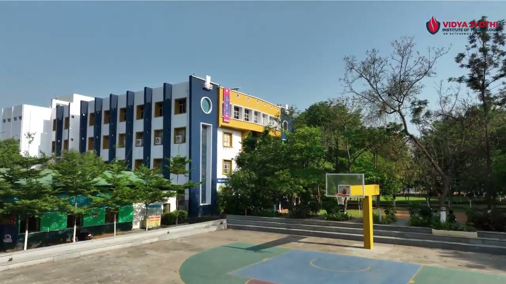

About Vidya Jyothi Institute of Technology
Vidya Jyothi A light house of knowledge
Vidya Jyothi Institute of Technology was established in 1998 by Vidya Jyothi Educational Society created by a group of committed academicians and enterprising educationists. VJIT quickly won the confidence of the parent community and the students to become one of the select destinations for future engineers. Soon the lamp of knowledge began to spread its radiance far and wide. The institute is committed to adopt the changes in Engineering Education and strongly believes in and strives to strengthen the Technical Education. The highest quality of VJIT’s academics is mirrored in the consistent 95% academic results. The institution registers an average of 82% placements for eligible students.


Learn More About Our History